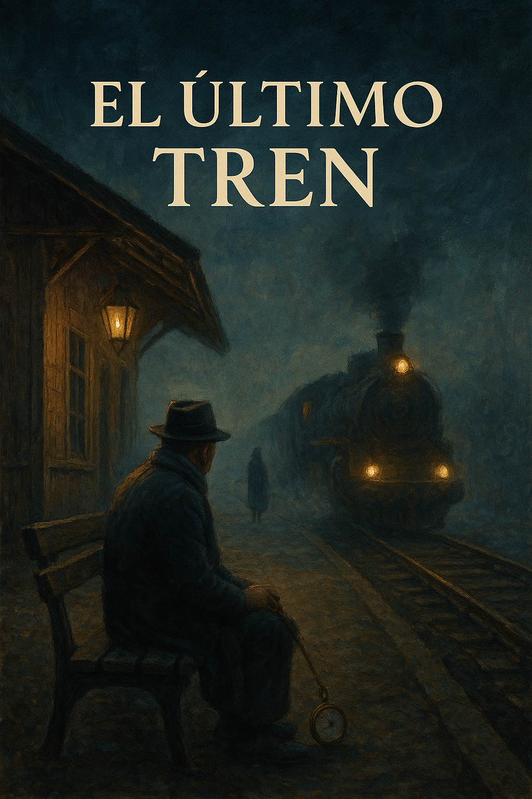

EL ÚLTIMO TREN

Introducción

En el pequeño pueblo de Valdén, Mateo iba cada noche a una estación abandonada.
Se sentaba frente a las vías cubiertas de maleza, esperando a su esposa Clara,
que había muerto hacía muchos años en un accidente de tren.
La gente del pueblo lo miraba con compasión, sin entender su esperanza.
Pero para Mateo, cada noche era una promesa: la de volver a ver a su amada.
La estación, silenciosa y cubierta de polvo, guardaba aún el eco de los viejos días.
A veces, cuando el viento soplaba desde el norte, parecía que los rieles susurraban su nombre.
Mateo hablaba con ellos, contándoles los recuerdos que aún conservaba de Clara:
sus risas, sus cartas y aquel último adiós en el andén.
Nudo

Una noche de niebla, Mateo escuchó el silbido de una locomotora.
Las vías comenzaron a vibrar y un tren antiguo apareció entre la niebla.
De una puerta bajó una mujer con un abrigo azul: era Clara.
Mateo no podía creer lo que veía. Su corazón, cansado y viejo, volvió a latir
con la fuerza de un joven. Dio un paso hacia ella, temblando.
Clara extendió su mano con una sonrisa serena. “He venido a cumplir mi promesa”,
dijo con una voz suave que parecía venir del pasado. La niebla los envolvía,
y el silbido del tren se mezclaba con los latidos de su corazón.
Mateo sintió que todo a su alrededor se desvanecía, como si el tiempo se disolviera
en aquella bruma misteriosa.
Los relojes del pueblo se detuvieron esa noche durante unos segundos.
Nadie lo notó, pero algo cambió en Valdén para siempre.
Desenlace

Mateo subió al tren con ella. La puerta se cerró y el tren desapareció entre la niebla.
A la mañana siguiente, los vecinos sólo encontraron su reloj detenido a las once y once.
Desde entonces, algunos dicen que en las noches de niebla se oye el tren pasar
y se ve una pareja riendo entre las sombras.
A veces, los más ancianos aseguran haber escuchado el nombre de Clara entre el viento.
Otros afirman que han visto luces moverse entre las vías abandonadas,
como si un tren invisible siguiera su camino hacia algún lugar más allá del tiempo.
El banco donde Mateo solía sentarse permanece allí, intacto, con su linterna oxidada al lado.
Nadie se atreve a tocarla, por respeto… o por miedo.
Porque en Valdén, todos saben que hay amores que ni la muerte puede detener.